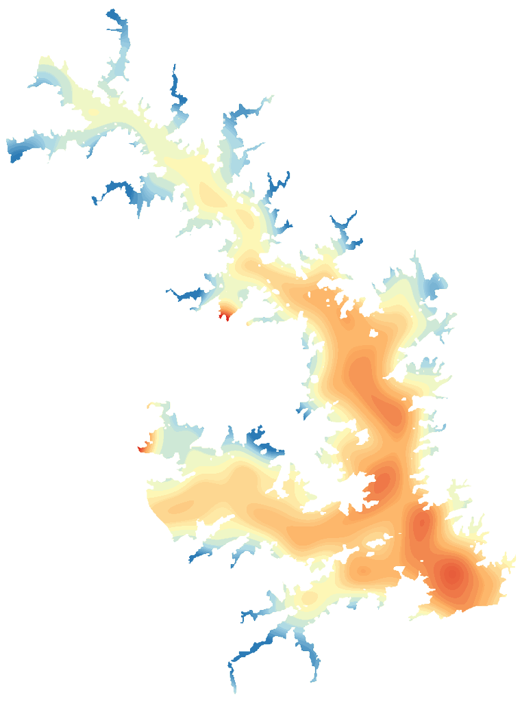

LakeScope › GA
Lake Thurmond (Clarks Hill) today
Updated 2026-11-21 - Atlas Labs
Clear water, 61°F water, level falling, 7 ft below normal, windy Saturday (15 mph NE).
Water level
317.26 ft
USGS gauge 02193900 - 2026-11-21
7-day trend: falling (-0.31 ft). Compared with normal for this date: -7.4 ft (same weeks, 2016-2025).
Water clarity and algae
Clear water Last clear view: about a week ago.
Surface temperature
61°F
seen from space on 2026-11-19

Weather, next 3 days
| Day | Sky | High / low | Wind | Rain |
|---|---|---|---|---|
| Saturday | Light Rain | 61 / 56°F | 15 mph NE | 94% |
| Sunday | Chance Light Rain | 67 / 55°F | 7 mph N | 30% |
| Monday | Mostly Sunny | 74 / 57°F | 2 mph NW | 1% |
Sunrise 07:07 - sunset 17:22 - Waxing gibbous. National Weather Service.
Get the LakeScope app: alerts and the 3-D view of Lake Thurmond (Clarks Hill)